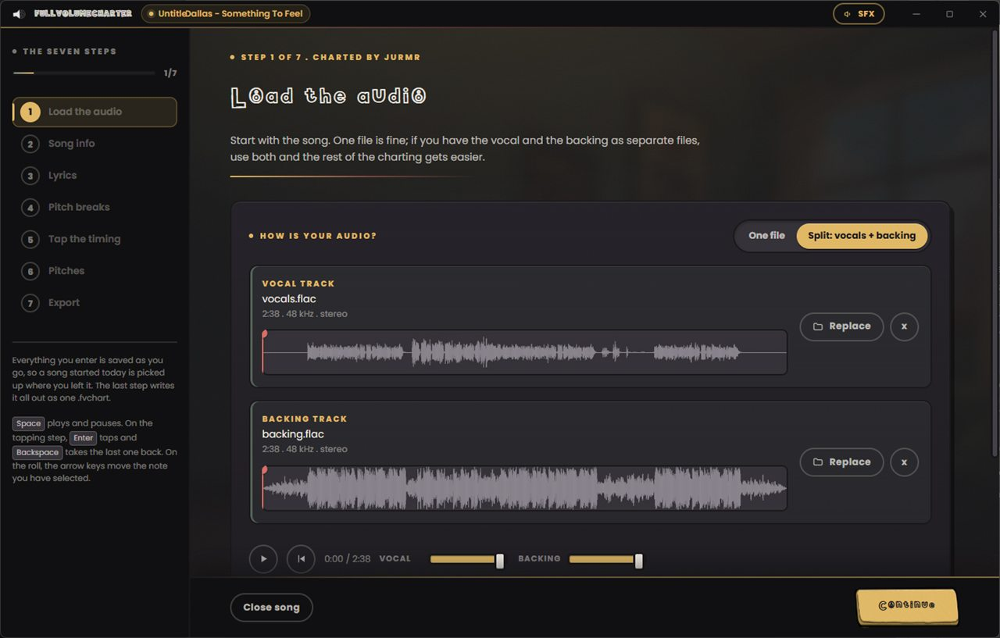

1
Load the audio
Start with the song. One file is fine. If you have the vocal and the backing as separate stems, use both and everything after this gets easier: you can hear the singer on their own while you work, and the game can lift the vocal out from under the person holding the microphone.
Drop two files in at once and it sorts them into the right slots on its own.
If there is cover art, a backdrop or a timed .lrc lyric file
sitting beside the track, those come in with it.
